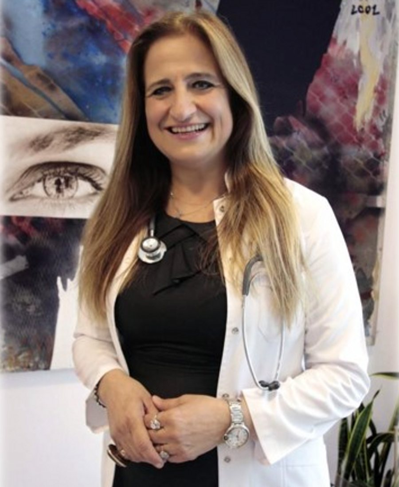

Dr. Aytül Gençer · Maslak, İstanbul
Hücreleriniz kaç yaşında?
Uyku, enerji ve stres, hareket, beslenme, metabolik denge ve önleyici takip. Altı alanda nerede durduğunuzu 12 kısa soruda görün; sonuç hemen ekranda. Dilerseniz size özel 14 günlük planı e-postanıza gönderelim.
Yaklaşık 3 dakika. Ücretsiz; iletişim bilgisi istenmez.

- 40 yılı aşkın hekimlik deneyimi
- Cleveland Clinic fonksiyonel tıp eğitimi
- Dokuz Eylül Üniversitesi Tıp Fakültesi
Testten kişisel plana dört adım
Testi çözün
12 soru, tek seçim. İletişim bilgisi istenmez.
Skorunuzu görün
100 üzerinden skorunuz ve altı alandaki durumunuz anında ekranda.
Planınızı alın
İsterseniz en zayıf iki alanınıza odaklanan 14 günlük planı ücretsiz e-postanıza gönderelim.
14. gün yeniden ölçün
Testi tekrar çözüp ilerlemenizi görün. Uzmana danışmak isterseniz WhatsApp hep açık.
Skorunuz, alanlarınız ve ilk adımlarınız
Sonuçta neyin iyi gittiğini, hangi iki alanın sizi geri tuttuğunu ve bugün başlayabileceğiniz küçük adımları görürsünüz. Ücret yok, randevu şartı yok.
Bu skor bir tanı aracı değildir; bilgilendirme amaçlıdır.
İlk görüşmeden yıl sonuna, 12 aylık takip
Beş durakta sizinle birlikte ilerleyen bir plan.
BAŞLANGIÇ · KEŞİF1. Ay
- Kişisel takip sorumlunuzla tanışma
- Ön görüşme: beklentileriniz ve öncelikleriniz
- Muayene öncesi sağlık formu ve ayrıntılı öykü
- Maslak kliniğinde hekim muayenesi
- Kapsamlı kan paneli ile başlangıç değerleriniz
- İleri tahlillerBHormon metabolitleri testi, amino asit profili
- Sonuç görüşmesi ve kişisel planınızBeslenme listesi; uyku, hareket ve stres düzeni; gerekirse tedavi ve takviye önerileri
İLK KONTROL3. Ay
- Online kontrol görüşmesi
- Plana uyum ve yakınmaların değerlendirilmesi
- Beslenme listesinin güncellenmesi
- Belirli saatlerde mesajla soru hakkı
YENİDEN ÖLÇÜM6. Ay
- Takip muayenesi
- Kan paneli tekrarı ve başlangıç değerleriyle karşılaştırma
- Gerekirse ileri tahlil tekrarıB
- Kişisel planın güncellenmesi
ARA KONTROL9. Ay
- Online kontrol görüşmesi
- Plan ayarlamaları
- Öncelikli randevuB
YIL SONU12. Ay
- Takip muayenesi ve kan paneli
- Yıl sonu ayrıntılı değerlendirme görüşmesiB
- Bir yılın karşılaştırması ve yeni yılın planı
Akış örnek bir yılı gösterir. Adımlar, seçtiğiniz protokole ve hekim değerlendirmesine göre size özel planlanır; Keşif protokolü 1. ayı kapsar.
Hekiminiz
Sağlık öykünüzü, beslenmenizi ve yaşam alışkanlıklarınızı birlikte değerlendiren, kişiye özel bir longevity ve fonksiyonel tıp yaklaşımı.
Test ve öneriler Dr. Aytül Gençer'in longevity yaklaşımıyla hazırlandı.
- KLİNİK
- Sun Plaza, Maslak Mah. Bilim Sk. No:5, Sarıyer/İstanbul
- ÖN GÖRÜŞME
- Klinikte ya da 30 dakikalık görüntülü görüşmeyle
- İLETİŞİM
- Randevu planlayın · WhatsApp
Merak edilenler
Longevity Skoru neyi ölçer?
Uyku, enerji ve stres, hareket, beslenme, metabolik denge ve önleyici takip alanlarındaki alışkanlıklarınızı 100 üzerinden puanlar. Tanı aracı değildir; nereden başlayabileceğinizi gösterir.
Takip protokolleri neleri kapsar?
Keşif başlangıç değerlendirmesini; Yıllık Takip ve Bütüncül Takip ise 12 ay boyunca 6 ayda bir muayene ve kan paneli tekrarını, 3 ayda bir online kontrolü kapsar.
Hangi tahliller yapılıyor?
Kadın ve erkek için ayrı hazırlanmış, 40'ı aşkın testlik bir biyokimya paneliyle başlanır; gerekirse hormon metabolitleri testi ve amino asit profili eklenir.
Ön görüşme nasıl yapılıyor?
30 dakikalık görüntülü bir görüşmedir. Skorunuz, şikâyetleriniz ve hedefleriniz konuşulur; size uygun protokol birlikte belirlenir.
Verilerim nasıl korunuyor?
Yanıtlarınız yalnızca açık rızanızla, değerlendirme ve sizinle iletişim amacıyla işlenir. Ayrıntılar Aydınlatma Metni'nde yer alır.
Klinik nerede?
Sun Plaza, Maslak Mah. Bilim Sk. No:5, 34398 Sarıyer/İstanbul. Ön görüşmeler online olarak da yapılabilir.